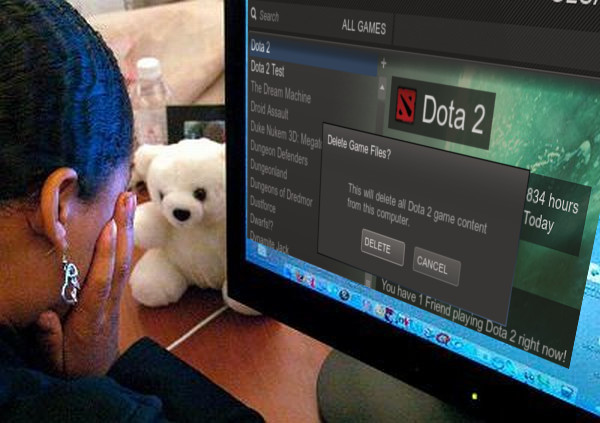

On the right you can find pages about how to prevent feeding in DOTA2. As of now those include Best practice, our Anti-Feeder-Script and Helpful Tips.
If you are in a game with feeding right now and need quick help then either check the Best practice page or come chat with us on our Live chat.
We also have a nice page which you can show to any feeders in DOTA2: http://stop-feeding.in/dota2/stop

Don't just mute - report instead! Remember that Disconnect is not a solution!